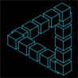

Operating System & IDE
- Operating System
- Linux (RedHat & Debian)
- Windows
- Mac OSx
- IDE
- Intelij IDE
- Visual Studio Code
- Visual Studio 2017
- CodeLite
Simply put, computer science and electrical engineering is the major I do love. There are plenty of reasons for the tendency, but solving a puzzle in a piece of code is the most important one for this tendency.
I worked for several leading companies in Iran, such as Huawei, MCI (Mobile Telecommunication Company of Iran), Irancell and DPI (former IBM branch in Iran). My key responsibility was managing and/or maintaining Linux operating system (OS) and Cisco network devices; I was an OS and network administrator. Although I worked as an administrator, I have a deep tendency to understand the underlying technology. By having such a desire, I read many research papers and hone my developing skills. Therefore, I started to teach myself advanced C++, Java, and currently, I am learning Go programming language.
During my MSc education, I used Java programming language to extend WorkflowSim. In short, WorkflowSim is an extension to CloudSim to simulate cloud computing and scientific workflows, which was developed in a group under the supervision of Professor Ewa Deelman. I used the simulator to implement and extend my research about the execution of scientific workflows on the cloud. The outcome of my research was three accepted research paper on national conferences in Iran and one rejected (due to weak English language) journal paper in Journal of Supercomputing, currently I am working on the language of the paper to improve it.
I have got developing and researching spirit. Finding something novel or developing a new application make me feel thrilling. For me working long hours on a project is not an elective choice, it is an essential---a must. When I was studying in BSc, I was busy working and learning Simplescalar, which was unwelcome task by my professors (I don't know why!). Simplescalr s a simulator to simulate hardware level execution, for example cache level, CPU pipeline and so on, which was written mainly in C/C++. At that time, I used C/C++ programming language.
Currently, I read cutting-edge research papers in a variety of research area (however, most of them are bound to Cloud computing, Distributed systems, Computer networks and communications.) I, also, developing a BoxMQ, message passing system empowered by blockchain technology. The implementation of the BoxMQ is in Golang. The idea behind the BoxMQ comes from
| Pub Date | Title | Author |
|---|---|---|
| 2018 | A DevOps framework for quality-driven self-protection in web software systems | Beigi-Mohammadi, N, and et al |
| 2018 | Allocate-On-Use Space Complexity of Shared-Memory Algorithms | James Aspnes and et al |
| 2018 | SDN-based fault-tolerant on-demand and in-advance bandwidth reservation in data center interconnects | Subedi, Tara Nath and et. al. |
| 2018 | Logchain: Blockchain-assisted Log Storage | William Pourmajidi, Andriy Miranskyy |
| 2017 | From DevOps to BizOps: Economic Sustainability for Scalable Cloud Applications | Marios Fokaefs, Cornel Brana, and Marin Litoiu |
| 2017 | Leveraging Near Data Processing for High-Performance Checkpoint/Restart | Abhinav Agrawal, et. al. |
| 2017 | The Power of Choice in Priority Scheduling | Dan Alistrah, et. al. |
| 2017 | Payless monitoring service for tenants in cloud with traffic and energy-aware function deployment | Cheriet Mohamed, et at |
| 2017 | CrowdSenSim: a Simulation Platform for Mobile Crowdsensing in Realistic Urban Environments | BURAK KANTARCI, et at. |
| 2017 | Blockchains and the Future of Distributed Computing | Maurice Herlithy and et. al. |
| 2017 | Gossip in a Smartphone Peer-to-Peer Network | Calvin Newport and et. al. |
| 2017 | A Survey on Metrics and Measurement Tools for Sustainable Distributed Cloud Networks | Riekstin, Ana Carolina and at. al. |
| 2017 | On Challenge of Cloud Monitoring | William Pourmajidi, John Steinbacher, Tony Erwin, Andriy Miranskyy |
| 2017 | Topology and Application Aware Dynamic VM Management in the Cloud | Michael Tighe, Michael Bauer |
| 2015 | Software-defined networking: A comprehensive survey | Kreutz Diego |